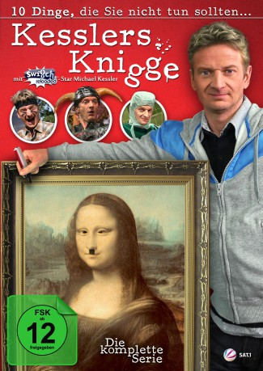

")
 
 IMDB-Wertung: 7.5 / 10
IMDB-Wertung: 7.5 / 10  Metascore:
Metascore: 
In this short lived but later viral TV series, Michael Kessler shows how not to behave in various situations, like at the first day at work, in public places or with relatives and/or children. Although it is funny, you shouldn't imitate anything in this.
Jahr: 2009
Dauer: 23 Minuten
FSK:
Land: Deutschland Studio: Sat.1Tonspuren:
Untertitel:
Auflösung: SD (640x352) Größe: 232 MB
Regisseur: Jan Markus Linhof, Joseph Orr
Drehbuch: Morten Kühne, Stefan Stuckmann
Soundtrack:
Darsteller:
Datei: X:\Dokumentationen\Comedy\Kesslers Knigge\knigge-s01e01-xvid.avi seit 22.06.2019
Festplatte: HD Serien(SU-Z)+Dokus+Musik
 Es gibt insgesamt 30 Filme in der Gruppe 'Dokumentationen\Comedy'
Es gibt insgesamt 30 Filme in der Gruppe 'Dokumentationen\Comedy'